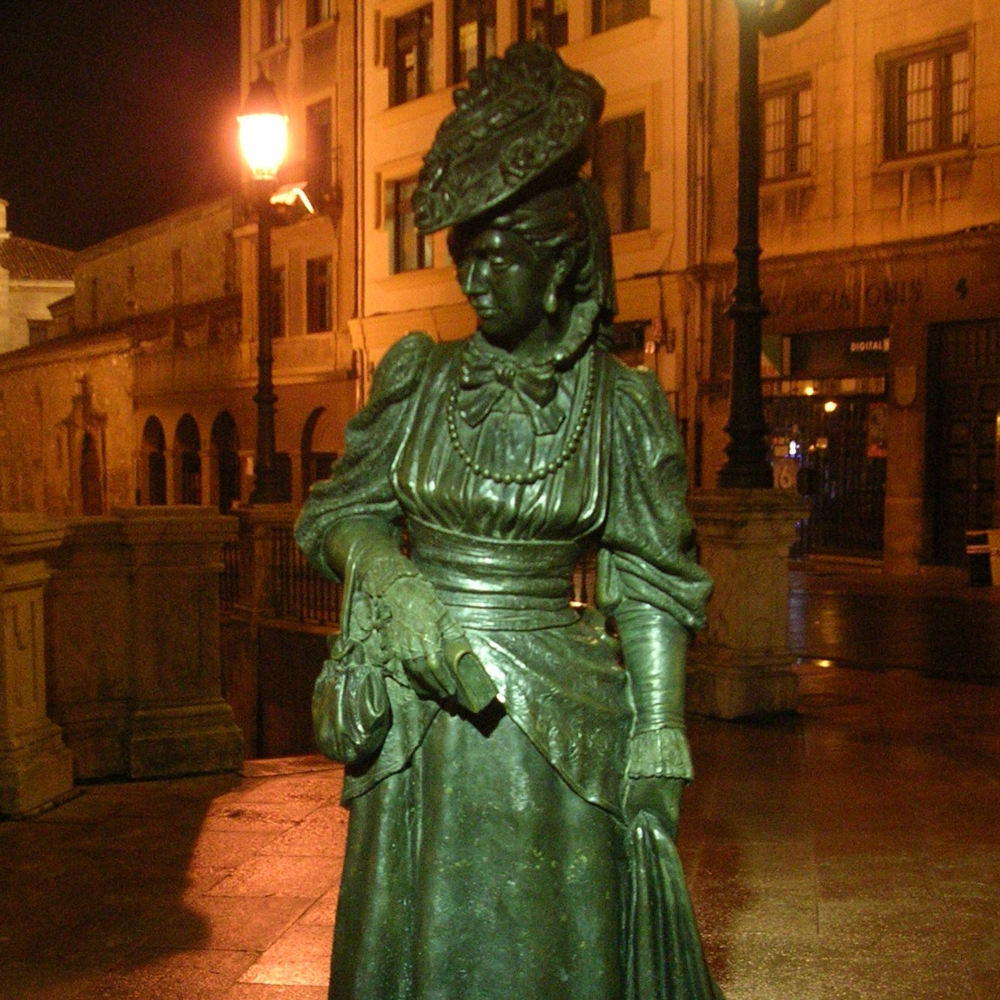

Actividades
Crear actividad
Nombre
Asignatura
Lugar
Estado
Opciones

Actividad en el Campus de Viesques
Una actividad para ver como es el Campus de Gijón de la Universidad de Oviedo
Historia
Campus de Viesques, Gijón
Creada
27-nov-2013 23:59
Actividad en Málaga
Una actividad para ver realizar tareas en el entorno urbano de la ciudad de Málaga
Matemáticas
Centro urbano de Málaga, Malaga
Disponible
27-nov-2013 23:59
Jardín Botánico Atlántico de Gijón
Una actividad para descubrir las diferentes especies atlánticas, diferenciar los tipos de bosques y reconocer la flora del Cantábrico
Biología y Geología
Jardín Botánico, Gijón
Finalizada
20-nov-2013 13:00

La Vetusta de La Regenta
En esta actividad se realizarán tareas mientras se da un paseo por los lugares de la ciudad de Oviedo que aparecen en la emblemática novela de Clarín
Lengua y literatura
Casco antiguo, Oviedo
Corregida
15-dic-2013 18:00